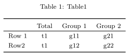
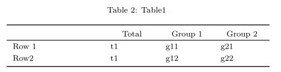

btabler is a package which adds wraps the xtable package, adding additional functionality such as merging header columns.
Note that btabler does not produce HTML tables. If using .Rmd, output should be pdf_document.
Example usage
Installing the package
The package can be installed from github via the remotes package
Note that remotes treats any warnings (e.g. that a certain package was built under a different version of R) as errors. If you see such an error, run the following line and try again:
Using the package
Load it as usual:
Create your tables via whatever means and pass them to the btable function:
df <- data.frame(name = c("", "Row 1", "Row2"),
out_t = c("Total", "t1", "t1"),
out_1 = c("Group 1", "g11", "g12"),
out_2 = c("Group 2", "g21", "g22"))
btable(df, nhead = 1, nfoot = 0, caption = "Table1")btable returns the latex code for the table you passed, which can be easily used with sweave to create tables in reports.

As an example for further modifications, column widths can also be modified using the aligntot argument:

See the vignette for further examples of using btabler
Requirements for the header
btabler tables are only interpretable by LaTeX when a few packages are loaded. It is recommended to place the following code in the header of your .tex file or .Rmd
# .tex
\usepackage{longtable}
\usepackage{booktabs}
\usepackage{float}
\usepackage{array}
# .Rmd
header-includes:
- \usepackage{longtable}
- \usepackage{booktabs}
- \usepackage{float}
- \usepackage{array}Other things like custom column types can also be added to the header (see the vignette for an example)